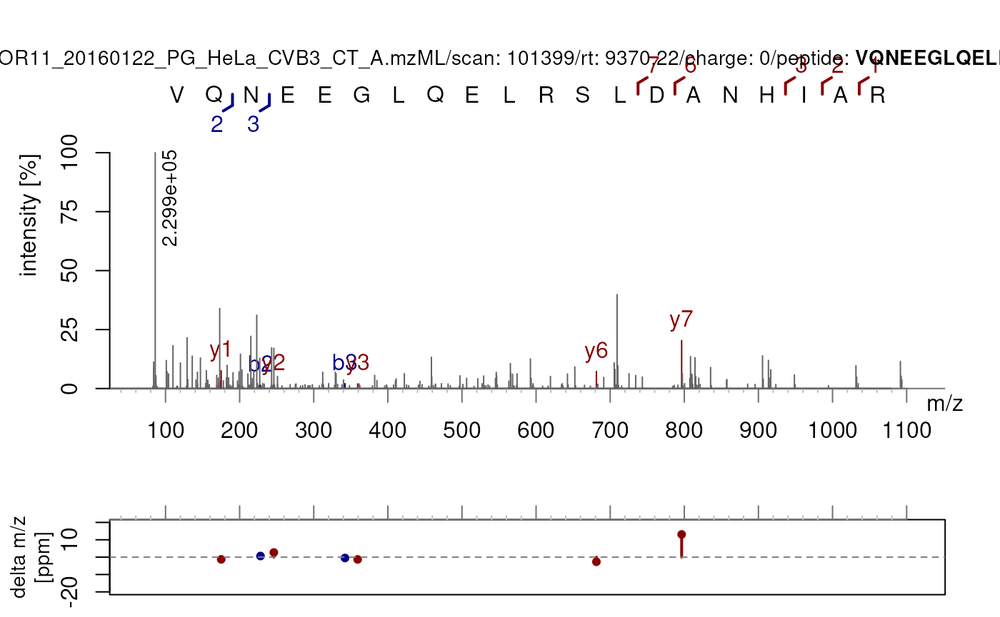
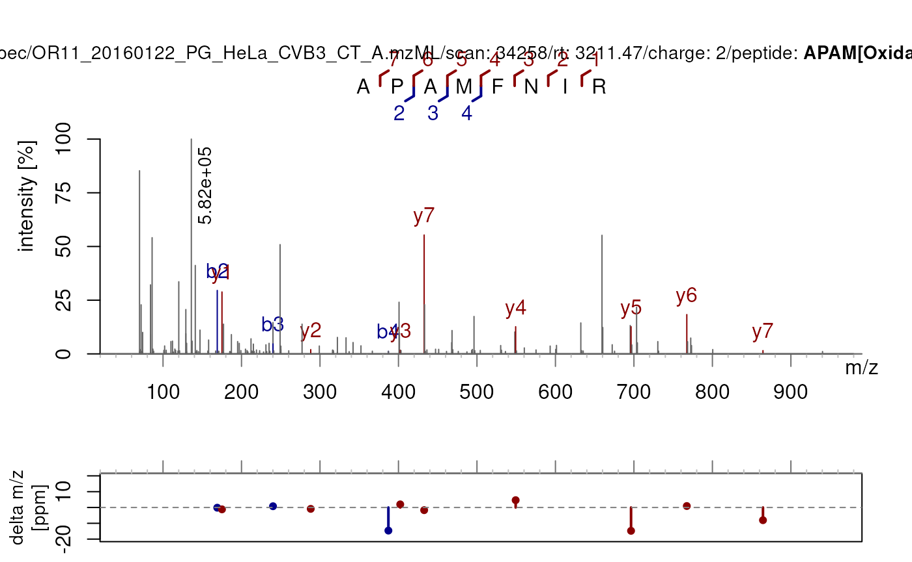

vignettes/validatePSM.Rmd
validatePSM.RmdPackage: PSMatch
Authors: Guillaume Deflandre
Last
modified: 2026-11-10 15:59:04.628378
Compiled: Tue Nov 10 16:26:26 2026
This vignette illustrates how to use the PSM validation functions in
the PSMatch package. The validation metrics operate on
Spectra objects that contain both raw peak data and peptide
identification data, and they can help assess confidence in
peptide–spectrum matches (PSMs) beyond a simple FDR filter.
The central function validatePSM() applies all checks at
once and returns a data.frame summarising one row per
identified PSM. Each individual check function can also be called in
isolation when only a specific metric is needed.
This vignette uses psmBoekweg and
spBoekweg, two objects bundled with PSMatch.
psmBoekweg is a PSM object and
spBoekweg is a Spectra object containing the
corresponding raw MS1 and MS2 spectra. More details on these datasets
can be found by loading the MsDataHub
package and using ?Boekweg2022.
## PSM with 700 rows and 40 columns.
## Spectra: 700 unique
## db: 572 target, 128 decoy
## ranks: 1:700
## names(40): psm_id peptide ... protein_q ms2_intensity
spBoekweg## MSn data (Spectra) with 348 spectra in a MsBackendMemory backend:
## msLevel rtime scanIndex
## <integer> <numeric> <integer>
## 1 1 941.689 6404
## 2 2 941.825 6405
## 3 1 976.998 6833
## 4 2 977.806 6843
## 5 1 1008.215 7218
## ... ... ... ...
## 344 2 13980.1 138534
## 345 1 13980.3 138536
## 346 2 13981.8 138545
## 347 1 14171.3 139922
## 348 2 14173.0 139932
## ... 35 more variables/columns.
## Processing:
## Switch backend from MsBackendMzR to MsBackendMemory [Tue Nov 10 11:00:30 2026]The two objects are joined on a shared key built from the file name
and scan number. It is important to keep both MS1 and MS2
spectra in the merged object as MS1 spectra are required by
checkPrecursorPurity().
psmBoekweg$pkey <- paste0(
basename(psmBoekweg$filename),
sub("^.+scan=", "::", psmBoekweg$scannr)
)
spBoekweg$pkey <- paste0(
basename(spBoekweg$dataOrigin),
sub("^.+scan=", "::", spBoekweg$spectrumId)
)
sp <- joinSpectraData(spBoekweg, psmBoekweg, by.x = "pkey")
sp## MSn data (Spectra) with 348 spectra in a MsBackendMemory backend:
## msLevel rtime scanIndex
## <integer> <numeric> <integer>
## 1 1 941.689 6404
## 2 2 941.825 6405
## 3 1 976.998 6833
## 4 2 977.806 6843
## 5 1 1008.215 7218
## ... ... ... ...
## 344 2 13980.1 138534
## 345 1 13980.3 138536
## 346 2 13981.8 138545
## 347 1 14171.3 139922
## 348 2 14173.0 139932
## ... 75 more variables/columns.
## Processing:
## Switch backend from MsBackendMzR to MsBackendMemory [Tue Nov 10 11:00:30 2026]Depending on the identification data/search engines, the sequence
data might not include modifications such as carbamidomethylation of
cysteines. If need be, we can add fixed modifications by using
PTMods::addFixedModifications() so that
calculateFragments() can account for it when computing
fragment m/z values.
seq_var <- psmVariables(psmBoekweg)[["peptide"]]
fdr_var <- psmVariables(psmBoekweg)[["fdr"]]
## In our case, carbamidomethylation is already present
sp[[seq_var]][!is.na(sp[[seq_var]])][30]## [1] "VGC[+57.0215]C[+57.0215]SDGIGVSR"
## There is no need to apply `PTMods::addFixedModifications()`:
## sp[["sequence"]] <- addFixedModifications(sp[[seq_var]])
## For converting the annotation style, use `PTMods::convertAnnotation()`
sp[["sequence"]] <- convertAnnotation(sp[[seq_var]], convertToStyle = "name")
sp[["sequence"]][!is.na(sp[["sequence"]])][30]## [1] "VGC[Carbamidomethyl]C[Carbamidomethyl]SDGIGVSR"We also create a convenience subset containing only the identified MS2 PSMs for use with the individual check functions below.
sp_psms <- sp[!is.na(sp[["sequence"]]) & sp$msLevel == 2L]Each section below explains what a metric measures, shows how to call it directly, and discusses how to interpret the result.
checkABpresence() : a2/b2 ion
pair
The a2 and b2 ions are among the smallest b-type and a-type fragments that can be generated from a peptide. Their simultaneous presence in a spectrum indicates good fragmentation of an actual peptide ion selected from the MS1.
checkABpresence() returns TRUE if both the
a2 and b2 ions are matched,
FALSE otherwise. A FALSE result does not
necessarily mean a bad identification (it is not abnormal for small ions
to be absent), but TRUE adds confidence.
ab <- checkABpresence(sp_psms[1:100])
table(ab)## ab
## FALSE TRUE
## 28 72checkXYpresence() : x2/y2 ion
pair
Analogous to checkABpresence() but for the C-terminal
x2/y2 fragment pair.
xy <- checkXYpresence(sp_psms[1:100])
table(xy)## xy
## FALSE TRUE
## 97 3checkOverlap() : coverage gap
between b- and y-ions
This check evaluates whether the matched b-ions and y-ions together cover the entire peptide sequence. Given a peptide of length , if the highest matched b-ion index is and the highest matched y-ion index is , a gap exists when:
checkOverlap() returns FALSE when such a
gap is detected and TRUE when b- and y-ions jointly cover
the sequence with overlap.
## Pre-compute label fragments once to reuse across checks
frags <- labelFragments(sp_psms[1:20], type = c("a", "b", "c", "x", "y", "z"))
overlap <- checkOverlap(sp_psms[1:20],
peptideVariable = "sequence",
fragments = frags,
strippedSeq = PTMods::getCanonicalSequence(sp_psms[["sequence"]][1:20])
)
table(overlap)## overlap
## FALSE TRUE
## 4 16Interpretation of a gap. A gap indicates a region of
the peptide that is not covered by any matched fragment. This often
points to an unaccounted-for modification sitting in the uncovered
stretch. Consider the sequence sp_psms[115]$sequence:
sp_psms[115]$sequence## [1] "VQNEEGLQELRSLDANHIAR"
checkOverlap(sp_psms[115])## [1] FALSE
plotSpectraPTM(sp_psms[115])
If the identified sequence does not contain a modification yetcheckOverlap() returns FALSE, applying a
modification on one of the residues in the identified gap could
restore fragment coverage.
Conversely, if there are no matched fragments that include the modified fragments in the sequence, there is no guarantee that there might have been a modification in the first place.
There is not even a guarantee that those specific amino acids within the gap are correct or in the correct order.
In short, checkOverlap() acts as a ringing bell,
indicating poor coverage of matched fragments within a spectrum and
potentially revealing the need to include or remove a modification.
checkShiftConsistency() : mass shift
coverage for modified sequences
When a peptide carries a post-translational modification (PTM), every
fragment ion that includes the modified residue should exhibit the
corresponding mass shift. checkShiftConsistency() counts
how many of these shift-bearing fragment positions are actually matched,
and returns the ratio as a value between 0 and 1.
For unmodified sequences the check is not applicable and
NA is returned. Higher values mean more of the expected
shifted fragments were observed, which strengthens confidence in both
the identification and the modification site assignment.
shifts <- checkShiftConsistency(sp_psms[1:50])
## NA for unmodified sequences, numeric for modified ones
table(is.na(shifts))##
## FALSE TRUE
## 10 40## Min. 1st Qu. Median Mean 3rd Qu. Max.
## 0.0000 0.0000 0.1214 0.1588 0.2692 0.5714Observe that very few fragments (including a supposedly identified modification) are matched. The highest value being NA for sequence APAM[Oxidation]FNIR . Out of 7 potential sites including the identified modification, 4 have been matched:
sp_psms[40]$sequence## [1] "APAM[Oxidation]FNIR"
checkShiftConsistency(sp_psms[40])## [1] 0.5714286
plotSpectraPTM(sp_psms[40])
checkParentIonIntensity() : residual
precursor in the MS2 spectrum
After CID or HCD fragmentation, the precursor ion is ideally fully fragmented. If the precursor ion still appears as an intense peak in the MS2 spectrum, it suggests incomplete fragmentation.
checkParentIonIntensity() reports the intensity of the
matched precursor peak relative to the base peak (most intense peak) in
the spectrum. A ratio close to 0 means the precursor was almost fully
consumed; a ratio close to 1 means the precursor dominates: a sign of
poor fragmentation.
parent <- checkParentIonIntensity(sp_psms[1:50])
summary(parent)## Min. 1st Qu. Median Mean 3rd Qu. Max.
## 0.00000 0.00000 0.00000 0.16041 0.07075 1.00000checkPrecursorPurity() : isolation
window contamination
Before fragmentation, the quadrupole isolates a narrow m/z window around the precursor ion. If other co-eluting peptides happen to fall within this window, their fragments will contaminate the resulting MS2 spectrum, potentially leading to chimeric spectra that are harder to interpret.
checkPrecursorPurity() wraps
Spectra::precursorPurity() and computes, for each MS2
spectrum, the fraction of total signal within the isolation window (in
the preceding MS1 scan) that belongs to the target precursor ion. A
purity of 1 means no contamination; lower values indicate co-isolated
species. MS1 spectra and MS2 scans with no preceding MS1 scan return
NA.
Note that the full sp object (MS1 and
MS2) must be passed here, not just the PSM subset.
checkPrecursorPurity(sp[1:6])## [1] NA 1.000000 NA 0.945725 NA 1.000000validatePSM()
validatePSM() applies all metrics in a single call. It
pre-computes peaksData and labelFragments
internally to avoid redundant computation. The function operates on a
Spectra object that contains both MS1 and MS2
spectra alongside the identification data.
(res <- validatePSM(sp[1:40],
peptideVariable = seq_var,
fdr = fdr_var)
)## spectrumId scanIndex
## 1 controllerType=0 controllerNumber=1 scan=6405 6405
## 2 controllerType=0 controllerNumber=1 scan=6843 6843
## 3 controllerType=0 controllerNumber=1 scan=7219 7219
## 4 controllerType=0 controllerNumber=1 scan=7857 7857
## 5 controllerType=0 controllerNumber=1 scan=7982 7982
## 6 controllerType=0 controllerNumber=1 scan=8869 8869
## 7 controllerType=0 controllerNumber=1 scan=10217 10217
## 8 controllerType=0 controllerNumber=1 scan=10411 10411
## 9 controllerType=0 controllerNumber=1 scan=11612 11612
## 10 controllerType=0 controllerNumber=1 scan=12193 12193
## 11 controllerType=0 controllerNumber=1 scan=12840 12840
## 12 controllerType=0 controllerNumber=1 scan=12855 12855
## 13 controllerType=0 controllerNumber=1 scan=13260 13260
## 14 controllerType=0 controllerNumber=1 scan=14431 14431
## 15 controllerType=0 controllerNumber=1 scan=14934 14934
## 16 controllerType=0 controllerNumber=1 scan=16222 16222
## 17 controllerType=0 controllerNumber=1 scan=16547 16547
## 18 controllerType=0 controllerNumber=1 scan=16822 16822
## 19 controllerType=0 controllerNumber=1 scan=18978 18978
## 20 controllerType=0 controllerNumber=1 scan=19232 19232
## peptide canonicalSeq fdr a2b2 x2y2
## 1 RPLEDGDQPDAKK RPLEDGDQPDAKK 3.777505e-05 FALSE FALSE
## 2 KAQQELEEQTRR KAQQELEEQTRR 3.894081e-04 FALSE FALSE
## 3 VMTSGTGAPAK VMTSGTGAPAK 1.972075e-05 TRUE FALSE
## 4 TGPPMGSR TGPPMGSR 2.828365e-03 TRUE FALSE
## 5 DLEADEEDTRKK DLEADEEDTRKK 1.972075e-05 TRUE FALSE
## 6 AIQLNEVR AIQLNEVR 8.800279e-03 FALSE FALSE
## 7 VIQHNALEDR VIQHNALEDR 1.972075e-05 TRUE FALSE
## 8 LTPATEPEK LTPATEPEK 3.664146e-02 FALSE FALSE
## 9 MGPSGGEGMEPERR MGPSGGEGMEPERR 1.972075e-05 TRUE FALSE
## 10 EEAGPM[+15.994]LAATPFVK EEAGPMLAATPFVK 6.631032e-02 FALSE FALSE
## 11 SQTVYVNEK SQTVYVNEK 3.246838e-02 TRUE FALSE
## 12 ALKTISVIPGLK ALKTISVIPGLK 1.070679e-01 FALSE FALSE
## 13 LQAEAQQLR LQAEAQQLR 1.972075e-05 TRUE FALSE
## 14 VAVQGDVVR VAVQGDVVR 3.777505e-05 TRUE FALSE
## 15 GILVKSTQEQSIFDM[+15.994]NR GILVKSTQEQSIFDMNR 4.317295e-02 FALSE FALSE
## 16 ALM[+15.994]DEVVK ALMDEVVK 1.229773e-03 TRUE FALSE
## 17 AQYEDIANR AQYEDIANR 1.972075e-05 TRUE FALSE
## 18 EGPEGFAR EGPEGFAR 1.409294e-04 TRUE FALSE
## 19 HFVALSTNTTK HFVALSTNTTK 7.291154e-05 TRUE FALSE
## 20 MQELYGDGK MQELYGDGK 1.775972e-03 TRUE TRUE
## byOverlap shiftConsistency parentIonInt precursorPurity
## 1 TRUE NA 0.00000000 1.0000000
## 2 FALSE NA 0.00000000 0.9457250
## 3 TRUE NA 0.11204439 1.0000000
## 4 TRUE NA 0.00000000 0.8622428
## 5 TRUE NA 1.00000000 1.0000000
## 6 FALSE NA 0.81555938 0.9384059
## 7 TRUE NA 0.00000000 0.6702247
## 8 TRUE NA 0.23390441 0.6416998
## 9 TRUE NA 0.15843055 1.0000000
## 10 FALSE 0.1538462 0.00000000 1.0000000
## 11 TRUE NA 0.00000000 1.0000000
## 12 FALSE NA 0.07205740 0.6332377
## 13 TRUE NA 0.00000000 0.5161977
## 14 TRUE NA 0.00000000 1.0000000
## 15 TRUE 0.2500000 0.06681615 1.0000000
## 16 TRUE 0.1428571 0.03189541 0.8419661
## 17 TRUE NA 0.00000000 0.9587410
## 18 TRUE NA 0.00000000 0.7348925
## 19 TRUE NA 0.00000000 0.9617097
## 20 TRUE NA 0.00000000 1.0000000The returned data.frame contains one row per identified
PSM with the following columns:
| Column | Type | Description |
|---|---|---|
spectrumId |
character | Spectrum identifier from the raw file |
scanIndex |
integer | Scan index within the file |
peptide |
character | Modified peptide sequence |
canonicalSeq |
character | Sequence without modifications |
fdr |
numeric | FDR from the database search |
a2b2 |
logical | a2 and b2 both matched |
x2y2 |
logical | x2 and y2 both matched |
byOverlap |
logical | Gap detected in b/y coverage |
shiftConsistency |
numeric | Fraction of shift-bearing fragments matched (NA if no
PTM) |
parentIonInt |
numeric | Relative precursor intensity in MS2 |
precursorPurity |
numeric | Precursor isolation purity from MS1 |
Note the small size of the final dataframe in comparison with the amount of spectra provided. This shows just how many spectra are not identified by search engines and the importance to improve the peptide identification in mass spectrometry-based proteomics.
The result can be merged with the original PSM table using the spectrum identifier or the scan index in order to include the metrics for rescoring:
## Example: join with the PSM data.frame by spectrum ID
psm_df <- as.data.frame(psmBoekweg)
combined <- merge(psm_df, res,
by.x = "scannr", by.y = "spectrumId",
all.x = FALSE
)This vignette is distributed under a CC BY-SA license.
## R version 4.6.1 (2026-06-24)
## Platform: x86_64-pc-linux-gnu
## Running under: Ubuntu 24.04.5 LTS
##
## Matrix products: default
## BLAS: /usr/lib/x86_64-linux-gnu/openblas-pthread/libblas.so.3
## LAPACK: /usr/lib/x86_64-linux-gnu/openblas-pthread/libopenblasp-r0.3.26.so; LAPACK version 3.12.0
##
## locale:
## [1] LC_CTYPE=en_US.UTF-8 LC_NUMERIC=C
## [3] LC_TIME=en_US.UTF-8 LC_COLLATE=en_US.UTF-8
## [5] LC_MONETARY=en_US.UTF-8 LC_MESSAGES=en_US.UTF-8
## [7] LC_PAPER=en_US.UTF-8 LC_NAME=C
## [9] LC_ADDRESS=C LC_TELEPHONE=C
## [11] LC_MEASUREMENT=en_US.UTF-8 LC_IDENTIFICATION=C
##
## time zone: UTC
## tzcode source: system (glibc)
##
## attached base packages:
## [1] stats4 stats graphics grDevices utils datasets methods
## [8] base
##
## other attached packages:
## [1] Spectra_1.23.6 BiocParallel_1.47.0 PSMatch_1.17.2
## [4] PTMods_1.1.1 S4Vectors_0.51.10 BiocGenerics_0.59.12
## [7] generics_0.1.4 BiocStyle_2.41.0
##
## loaded via a namespace (and not attached):
## [1] SummarizedExperiment_1.43.0 xfun_0.62
## [3] bslib_0.12.0 htmlwidgets_1.6.4
## [5] QFeatures_1.23.2 Biobase_2.73.2
## [7] lattice_0.23-1 vctrs_0.7.3
## [9] tools_4.6.1 parallel_4.6.1
## [11] tibble_3.3.1 cluster_2.1.8.3
## [13] pkgconfig_2.0.3 Matrix_1.7-6
## [15] data.table_1.18.6.1 desc_1.4.3
## [17] lifecycle_1.0.5 compiler_4.6.1
## [19] stringr_1.6.0 textshaping_1.0.5
## [21] Seqinfo_1.3.2 codetools_0.2-20
## [23] clue_0.3-68 htmltools_0.5.9
## [25] sass_0.4.10 yaml_2.3.12
## [27] lazyeval_0.2.3 tidyr_1.3.2
## [29] pkgdown_2.2.1.9000 pillar_1.11.1
## [31] jquerylib_0.1.4 MASS_7.3-66
## [33] cachem_1.1.0 DelayedArray_0.39.8
## [35] MetaboCoreUtils_1.21.2 abind_1.4-8
## [37] tidyselect_1.2.1 digest_0.6.39
## [39] stringi_1.8.9 purrr_1.2.2
## [41] dplyr_1.2.1 reshape2_1.4.5
## [43] bookdown_0.48 fastmap_1.2.0
## [45] grid_4.6.1 cli_3.6.6
## [47] SparseArray_1.13.4 magrittr_2.0.5
## [49] S4Arrays_1.13.2 rmarkdown_2.32
## [51] XVector_0.53.0 matrixStats_1.5.0
## [53] igraph_2.3.4 otel_0.2.0
## [55] ragg_1.5.2 evaluate_1.0.5
## [57] knitr_1.52 GenomicRanges_1.65.4
## [59] IRanges_2.47.5 MultiAssayExperiment_1.39.1
## [61] rlang_1.3.0 Rcpp_1.1.2
## [63] glue_1.8.1 BiocManager_1.30.27
## [65] jsonlite_2.0.0 plyr_1.8.9
## [67] AnnotationFilter_1.37.0 R6_2.6.1
## [69] MatrixGenerics_1.25.0 systemfonts_1.3.2
## [71] fs_2.1.0 ProtGenerics_1.45.0
## [73] MsCoreUtils_1.25.4